Parsellere göre hacim hesaplaması, ilgili iletişim kutusunun üst kısmında seçilecek üç farklı yönteme göre yapılabilir:
Bu menüde ölçümü nasıl yapacağımızı seçebiliriz, çünkü birkaç yol izleyebiliriz:
- Herhangi bir SAM Yüzeyi (Harita, SAM (TTP), Grid veya Yoğun Nokta Bulutu). Bu durumda, yüzeyler arasındaki ölçüm, belirli bir çözünürlüğe sahip prizmalarla yapılır.
- SAM (TTP) Yüzeyleri. Bu durumda ölçüm, SAM'a Göre Hacim Hesabı tarzında üçgenleme kesişimi ile yapılır.
- YNB Yüzeyleri. Bu durumda, yüzeyler arasındaki ölçüm yoğun nokta bulutları ile yapılır ve iki yoğun nokta bulutu arasındaki hacim hesaplama aracının yöntemini kullanır.
İlk iki yöntem için ölçümlerle ilgili olarak iki yol seçebiliriz:
- Doğrudan ölçüm Yarma/Dolgu/Sıyırma Kazısı
- .dar tablosu tarzında ölçüm
- Kot Değeri (Ağırlık Merkezinde) Ölçümü
Yüzey ve ölçümle ilgili tüm olası kombinasyonlar mümkündür.
Her parsel ataması, bir malzeme ve bir grupla ilişkilendirilebilir.
Grup:
- Her Grubun bir Adı, bir rengi ve kapalı alanları aktarmak için bir çizgi tipi vardır.
- Gruplar etkinleştirilebilir/devre dışı bırakılabilir, böylece sadece aktif gruplar ölçülür.
- Ölçümler gruplara göre yapılır ve gruplara göre toplanır.
- Grupların bilgisi ve durumu, parsellerin .vpp dosyasında kaydedilir.
- Grup adı etiketlenebilir.
- Ayrıca her parsel için bir yoğunluk kullanma imkanı da eklenmiştir.
- Yoğunluk kullanılırsa, listelerde gruplara göre toplam kütle toplanır.
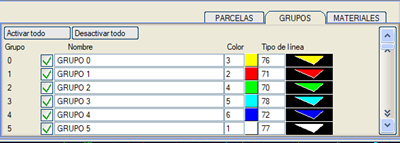
Malzeme: MALZEMELER sekmesinden, her bir malzemenin adıyla ve yoğunluğuyla tanımlanmasına izin verilir. Bu seçeneği kullanırken, her parsel için bir malzeme seçebiliriz. Birden fazla parsel aynı malzemeye sahip olabilir. Her grup içinde, parseller malzemelere göre sıralanır. Listelenenler:
- Parsel başına kısmi kütle.
- Malzemeye göre birikmiş kütle (aynı malzemeye sahip gruptaki tüm parseller).
- Gruba göre birikmiş kütle.
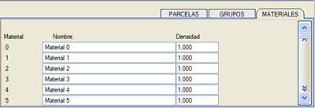
Parsellere Göre Hacim Hesabı
Bu seçenek, iki yüzey arasında ve bir kontur içinde yarma ve dolgu ölçümü yapmayı sağlar (prizmatik hacim hesabı aracı gibi), ancak ölçümü herhangi bir kapalı alanla tanımlanan farklı parsellere göre ayırır. [Parsellere Göre Hacim] butonuna basıldığında aşağıdaki iletişim kutusu açılır:
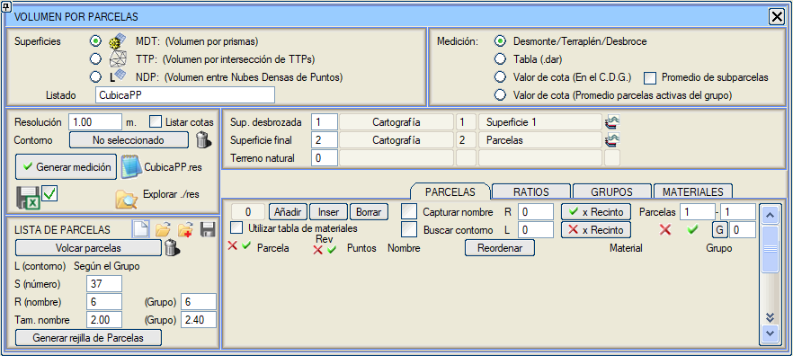
Bildirilecek seçenekler ve/veya parametreler şunlardır:
- Sıyırılmış orijinal yüzey: Yüzeyin numarası girilir.
- Nihai yüzey: Yüzeyin numarası girilir.
- Doğal arazi: Bu yüzeye mevcut bir yüzeyin numarası verilirse, program yüzey tutarlı olduğu sürece yarma ve dolgudaki sıyırma kazısını da ölçer.
- Kotları Listele: Bu seçenek etkinleştirildiğinde, listede ek olarak her parselin merkezi ve bu noktadaki orijinal ve nihai yüzeylerin kotları yazdırılır.
- Kontur: Ölçümü sınırlayan kapalı bir çizgi seçilir.
- Çözünürlük: Hesaplamanın yapıldığı birim prizmanın genişliğini tanımlar.
-
PARSELLER: Ekle, Araya Ekle ve Sil parsellerine olanak tanır. Her parsel, Noktalar sütunundaki butona tıklayarak onu tanımlayan kapalı alanı seçerek ve bir Ad ile tanımlanır. x Kapalı Alan butonlarıyla, seçilecek bir kapalı alandan geçen tüm parseller etkinleştirilebilir ve devre dışı bırakılabilir. Diğer parseller, aktivasyon durumlarını korur. Parseller, .vpp dosyaları aracılığıyla [Kaydedilebilir], [Eklenebilir] ve [Yüklenebilir], böylece aynı parsellerle başka bir ölçüm yapmak için bunların haritada çizili olması gerekmez.
Bir .vpp dosyası Yüklenirken veya Eklenirken, parsel adları P- ile başlıyorsa, yeni parsel listesinde karşılık gelen sıra numarası kullanılarak yeniden adlandırılır.
- Ayrıca şu seçenekler de mevcuttur:
- Adı Yakala: Parseli seçerken, haritada belirli bir stildeki metinler arasından, yerleştirme noktası parselin içinde olan adı arar.
- Konturu Bul: Bir iç noktaya tıklayarak parseli seçmeyi sağlar, konturun tek bir kapalı alandan oluşması bile gerekmez.
- Parselleri Etkinleştir veya Devre Dışı Bırak: Bireysel parselleri etkinleştirme/devre dışı bırakma imkanı. Bir parseli kullanmak için, hem grubunun hem de parselin kendisinin aynı anda aktif olması gerekir.
- Etkinleştirmek, devre dışı bırakmak veya onlara bir grup atamak için bir parsel aralığı seçin.
- Gözden Geçirme ve Parsel Arama: Parsel tablosunda, parselleri gözden geçirilmiş olarak işaretlemek için bir sütun ve parseli aramak için başka bir sütun olmak üzere iki sütunumuz var; ikincisine basıldığında ekran, konturu vurgulanan aranan parsele genişler ve ortalanır. Sütundaki tüm alanları etkinleştirmek ve devre dışı bırakmak için simgeler eklenmiştir (parsel gözden geçirildi). Mevcut parselin numarası düzenlenebilir bir alandır, bu da doğrudan başka bir parsele gitmeyi sağlar. Gözden Geç. Yeniden Sırala aracı, parselleri gruba ve malzemeye göre sıralamayı sağlar.
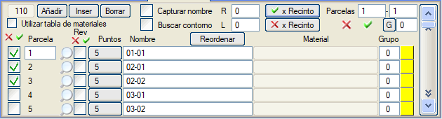
- Parselleri Aktar: Bir parsel dosyasından şunları oluşturmayı sağlar:
- Belirtilen çizgi tipiyle kontur.
- Seçilen sembol (etiket) tipiyle parsel numarası.
- Belirtilen bir metin stili ve boyutuyla ad.
- Parsel Izgarası Oluştur: Aşağıdaki verilerle yeni bir pencere açar:
- Parsel ızgarasının içinde olması gereken kontur.
- Izgaradaki bir Noktanın X,Y Koordinatları.
- Parsellerin (kare) Kenarı.
- Yönelim (altmışlık derece).
- Konturu temizlemek için simge
 . .
- Oluşturma sırası: BDKG, BDGK, DBKG, DBGK, GKBD, KGBD, GKBK veya KGDB.
- Yön değiştir: her n satırda veya sütunda oluşturma yönünü tersine çevirmeyi sağlar.
- Metraj Oluştur: Hesaplamayı yapar ve cubica.res listesini oluşturur. Her parsel içindeki ölçüm, aynı zamanda ölçüm konturunun içine düşen parsel bölgelerinde yapılır (tamamen kontur içinde, tamamen dışında veya kısmen içinde ve kısmen dışında parseller olabilir). Hesaplama sırasında, yarma alanı maviye ve dolgu alanı kırmızıya boyanır. [Listado cubica.res] butonuna basıldığında görüntülenebilen liste, kısmi hacmi, birikmiş hacmi, yarma ve dolgu arasında ayrım yaparak parsellere göre alanı ve her parselin kontur içindeki alanını listeler. Ayrıca, herhangi bir hesap tablosu tarafından hızlı bir şekilde yorumlanabilmesi için sekmelerle ayrılmış olan cb.res dosyası da oluşturulur.
Malzeme tablosu kullanıldığında ve yarma/dolgu/sıyırma kazısı tipi ölçümlerde (.dar tablosuyla değil), cubica.res ve cubicaPP.xlsx listelerinin sonunda malzemelere ve gruplara göre bir metraj özet listesi oluşturulur.
Listeler içinde, seçtiğimiz yönteme göre diğer verilerin yanı sıra şunları elde edebiliriz:
- Ölçüm Tipi: Yarma/Dolgu/Sıyırma Kazısı veya .dar tablosuna göre.
- Yüzey Tipi: SAM (Prizmalara Göre Hacim) veya SAM (TTP) (SAM'lara Göre Hacim).
- SAM'ların veya SAM'lerin adları (.dar tablosuyla ölçüm hariç).
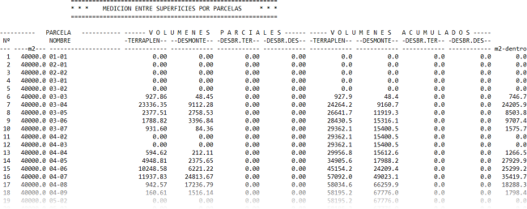
vol_parcelas_ndp.png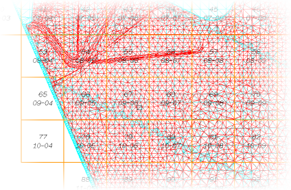
- ORANLAR: Bu sekme, her parsel için bir katsayı ve bir yorum tanımlamayı sağlar. Etkinleştirilirse, bu katsayı her parselde ölçülen hacimlerin (Y/D) hesaplanmasını etkiler.
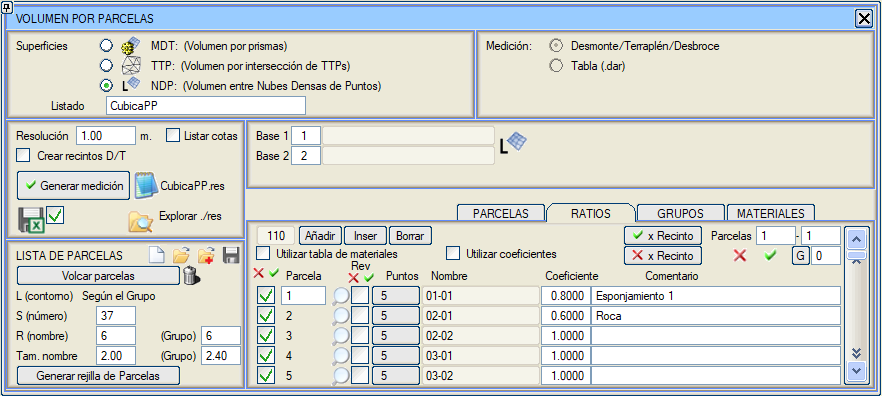
Parsellere Göre, bir .dar tablosu ile ve kot değeri ile Hacim Hesabı
Bu durum, farklı metrajlar çıkarmak için bir alan tanım tablosu tanımlamanın mümkün olması ve ayrıca Seviyelere göre Hacim Hesaplama imkanı eklemesi dışında, öncekiyle aynıdır; üst ve alt kotlar ile aralık verilir.
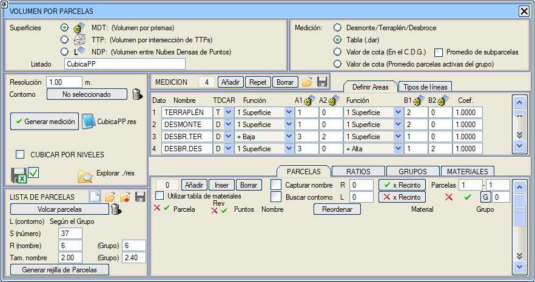
Bu alan tanım tablosu, ENKESİT EDİTÖRÜ'nün hacim tabloları menüsündekiyle aynıdır, ancak aşağıdaki basitleştirmelerle:
- Her metrajın adını tanımlamaya izin verilir. Hacim tablolarında olduğu gibi, ad " < > " arasında olduğunda, metraj için dikkate alınır ancak listelerde görünmez.
- Metraj, iki A ve B yüzeyi arasında yarma (Y) veya dolgu (D) olabilir. Ayrıca, enkesit editörünün .dar tablolarında olduğu gibi Alanlar (A) ve Oranlar (O) da tanımlanabilir. Ayrıca, bu tablolar iletişim kutusundan kaydedilebilir ve yüklenebilir.
Bir tablo okunduğunda, Y,D,A veya O olmayan satırlar Y'ye dönüşür.
Not: Bu tabloları enkesit editörünün tablolarıyla karıştırmamak gerekir, çünkü onlar enkesitlerde tanımlanan yüzeyler üzerinde çalışırken, bunlar SAM yüzeyleri (Harita, SAM (TTP), Grid veya Yoğun Nokta Bulutları) veya SAM'larla (TTP) çalışır.
- A ve B yüzeyleri, yüzeyler arasındaki bir işlemin sonucu olabilir. Burada sadece şu işlemlere izin verilir: [1 yüzey], [+Alçak] ve [+Yüksek], [+Tam Alçak], [+Tam Yüksek], [+Alçak veya A1/B1], [+Yüksek veya A1/B1].
- Varsayılan olarak aşağıdaki yüzeyler varsayılır:
- Sıyırılmış orijinal yüzey.
- Nihai yüzey.
- Sıyırılmamış orijinal arazi yüzeyi.
Bunlarla aşağıdaki metrajlar elde edilir:
- 1 ve 2 yüzeyleri arasındaki dolgu
- 1 ve 2 yüzeyleri arasındaki yarma
- Dolgudaki sıyırma kazısı
- Yarmadaki sıyırma kazısı
- Katsayı parametresi aracılığıyla, örneğin ton bazında bir metraj elde etmek için her satıra bir değer verebiliriz.
Kot Değeri seçeneği ile, her parsel için her bir SAM yüzeyinin parselin ağırlık merkezindeki kot değerini içeren bir liste oluşturulur.
SAM yüzeyleri, SAM Yüzeyleri Kontrolü iletişim kutusunun Yüzey Profili sütununa konulan numaraya göre sıralanır. Kot değeri şunlar olabilir: Gerçek kot, eğim, yüzde, yoğunluk vb. parsele ilişkilendirilmesi istenen herhangi bir değer.
Ölçümün adı, orijinal dosyanın adıyla eşleşir (Eğer bir ttp tipi yüzey ise, ttp dosyasının adı vb.).
Eğer [Alt Parsel Ortalaması] seçeneği etkinleştirilirse, ağırlık merkezinde hesaplanan kotlar, bir alt parsel bölünmesi kullanılarak hesaplanabilir: örneğin, alt parselin kenar değerini girmeyi sağlayan bir Alt Parsel Izgarası penceresi açılır. Metraj oluşturulduğunda, kotun parsel içine düşen alt parselin alanını dikkate alarak ağırlıklı bir ortalama olması için her parselin alt parselleri dinamik olarak oluşturulur.
Üçgenlenmiş yüzeyler (.ttp) arasındaki parsellere göre Hacim Hesabı
Parsellere göre hacim ve .ttp'ye göre hacim'in bir karışımıdır. .ttp dosyalarında üçgenlenmiş modellerle tanımlanan iki yüzey arasındaki yarma ve dolgu hacimlerinin ölçümünü, ölçümü kullanıcı tarafından tanımlanan parsellere göre ayırarak gerçekleştirir. İsteğe bağlı olarak, ölçüm alanını sınırlamak için bir kontur seçilebilir.
.ttp dosyaları, butonu ile erişilebilen SAM kontrolü listesinin indeksleri aracılığıyla bildirilir.
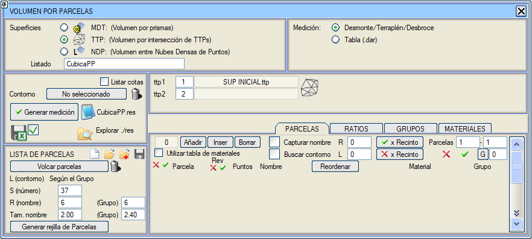
Modda: SAM (TTP) Yüzeyleri ve Hacim Hesaplama .dar tablosu kullanılarak aşağıdaki olanaklara sahibiz:
- Her bir metraj verisi için enkesit editörünün hacim tablolarında olduğu gibi bir çizgi tipi tanımlama imkanı.
- Her bir metrajın kapalı alanlarını, her biri için tanımlanan çizgi tiplerini kullanarak planda oluşturma imkanı.
- Üst ve alt kotları ile aralığı vererek seviyelere göre hacim hesaplamayı etkinleştirme imkanı.
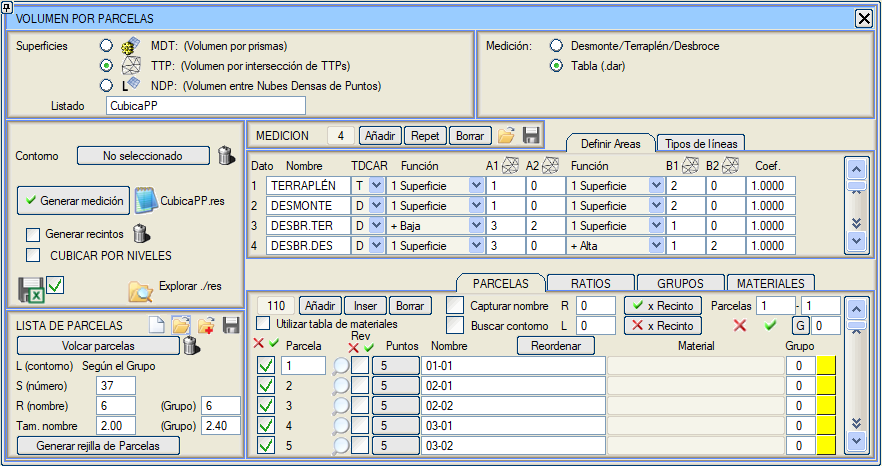
İki ttp üzerinde ölçülen dolgu ve yarma 3D yüzeyleri eklenir. SAM'ların kesişimiyle ve .dar tablosu kullanılarak +Tam Yüksek, +Tam Alçak, + Alçak veya A1/B1 ve + Yüksek veya A1/B1 işlevleri eklenir.
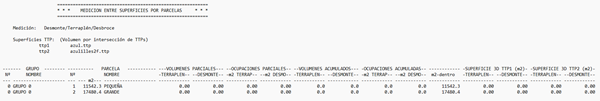
Parsellere göre, Gruplara göre gruplandırılmış, Seviyelere Göre Hacim Hesaplama modunda bir Excel formatında hacim listesi oluşturabiliriz. Liste oluşturulduğunda, .res klasöründe varsayılan adı CubicaPPGrupos.xlsx olan bir dosya oluşturulur, bu dosyaya belirli bir ad verme imkanı vardır. Ayrıca, listeyi azalan şekilde sıralayabiliriz.
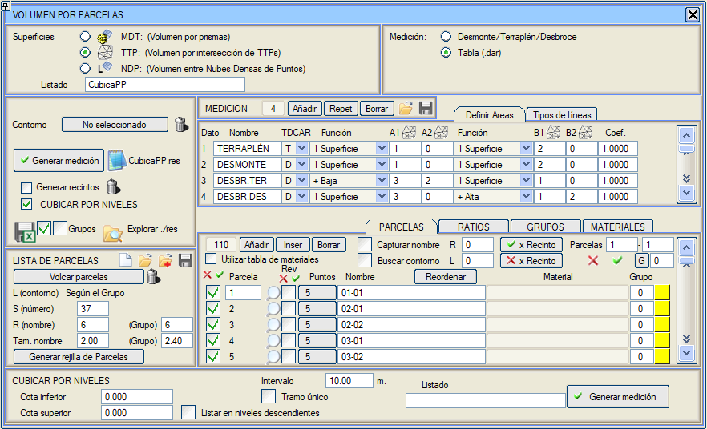
Yoğun Nokta Bulutları Arasındaki Parsellere Göre Hacim Hesabı
Bu yöntem, iki yoğun nokta bulutundan yola çıkar ve Yoğun Nokta Bulutları menüsündeki Hacim Hesapla aracının yöntemini kullanır: diğer iki tabanın kot farkıyla düzenli bir grid üzerinde üçüncü bir veritabanı oluşturur. Bu yöntem, Ölçüm seçicilerini devre dışı bırakır. Y/D alanları oluştur bayrağını etkinleştirerek yarma ve dolgu alanlarını oluşturma imkanı sunar.
|